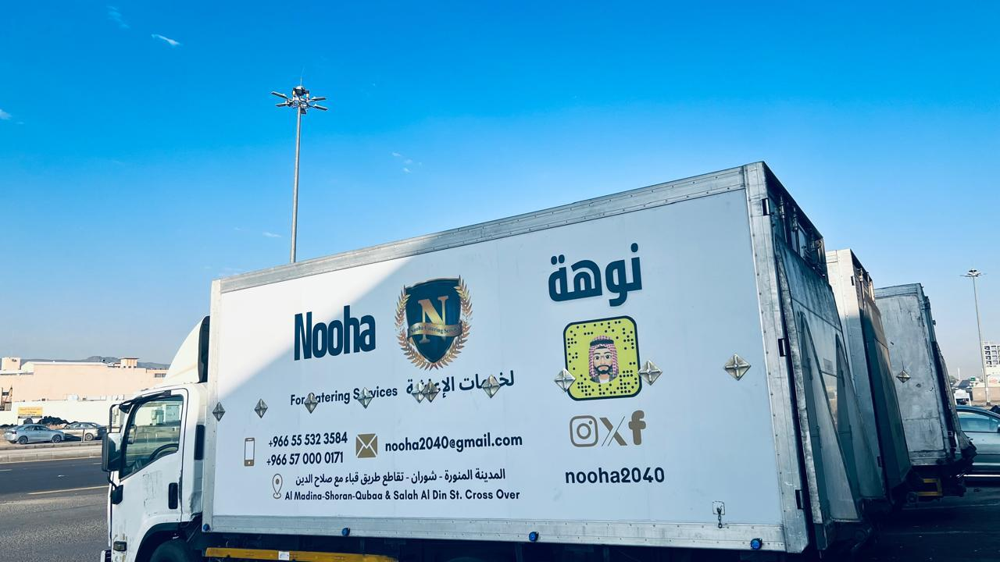

تبوك ضباء
المطبخ المركزي في تبوك ضباء
نغذي طموحكم بخدمة تليق بثقتكم عبر دعم غذائي استراتيجي لمشاريع نيوم والمناطق المحيطة.

المطبخ المركزي في تبوك ضباء
دعم غذائي استراتيجي لمشاريع نيوم والمناطق المحيطة
في قلب منطقة تبوك، وتحديدًا في مدينة ضباء، يقع أحد أهم مراكز عمليات نوهة للتموين والإعاشة. تم تأسيس هذا المطبخ ليكون محطة استراتيجية متقدمة تدعم مشاريع نيوم والمشاريع التنموية المحيطة بها.
يعتمد مطبخ ضباء على أسطول من الشاحنات المبردة لضمان إيصال الوجبات في الوقت المحدد إلى مواقع العمل والمرافق السكنية ومقرات الشركات، مع أنظمة تتبع ومراقبة حرارية للحفاظ على جودة الطعام حتى لحظة التسليم.
موقع استراتيجي
طاقة تشغيلية عالية وموقع استراتيجي
تم اختيار الموقع بعناية ليكون قريبًا من مواقع المشاريع الكبرى، مما يقلل زمن التوصيل ويزيد من كفاءة سلسلة الإمداد الغذائي، خصوصًا في مشاريع تتطلب استجابة فورية وسعة إنتاج ضخمة.
نطاق الخدمة
خدمة تموين متكاملة لمشاريع نيوم
من خلال مطبخ ضباء، تقدم نوهة خدمات تموين يومية لعدد من المشاريع الحيوية، ضمن أنظمة غذائية متوازنة وتحت إشراف طهاة محترفين وفريق جودة وسلامة متخصص.
شركات المقاولات
العاملة في مشاريع نيوم ومواقع الإنشاء.
معسكرات العمال
في مواقع الإنشاء والتطوير والمرافق السكنية.
المرافق الإدارية
والخدمية التي تحتاج إلى وجبات منتظمة.
الفنادق المؤقتة
ومساكن الموظفين داخل نطاق المشاريع.
مشاريع البنية التحتية
والمرافق الصناعية ذات التشغيل اليومي.
القوائم الغذائية
تنوع في القوائم وتخصيص حسب الحاجة
ندرك أن العاملين في مشاريع مثل نيوم يمثلون خلفيات متعددة وثقافات متنوعة، لذلك نوفر قوائم طعام مخصصة يتم إعدادها بالتعاون مع أخصائيي تغذية وطهاة محترفين لضمان التوازن بين المذاق والجودة الغذائية.
- الوجبات الآسيوية.
- المأكولات العربية والخليجية.
- الأطباق الهندية والباكستانية.
- خيارات نباتية ووجبات طبية خاصة عند الطلب.
99%موقع استراتيجي يخدم مشاريع نيوم
98%إنتاج يومي يصل إلى 12,000 وجبة
100%خبرة في تموين العمالة والمشاريع الصناعية
99%تنوع في قوائم الطعام
100%التزام صارم بمعايير HACCP وسلامة الغذاء
100%خدمات توصيل موثوقة وسريعة

تواصل معنا
تواصل معنا
إذا كانت منشأتك تبحث عن حلول تموين تدار بانضباط تشغيلي وجودة ثابتة
فإن فريق نوهة جاهز لدراسة متطلباتك وبناء نموذج تموين يناسب طبيعة موقعك وحجم التشغيل.